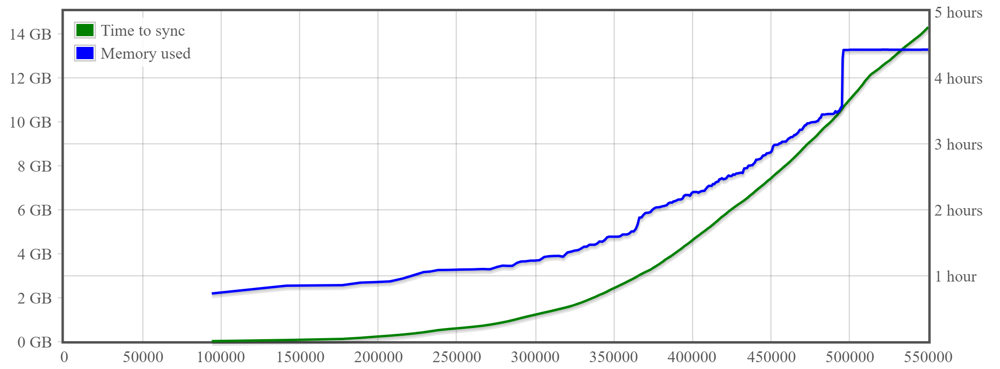

Performance
Gocoin node keeps the entire UTXO set in RAM, providing the best block and transaction
processing performance on the market.
Charts below present system memory and time needed to sync BTC block chain up to the given block number,
depeding on the configuration of a virtual server from Google Cloud Platform.
Each test was performed with Gocoin client version 1.9.5, built with Go version 1.12 beta 1,
using default configuration and running on Debian GNU/Linux 9 (stretch).
Note that Gocoin uses configurable LastTrustedBlock parameter, to avoid verifying scripts from all blocks known as valid.
32 vCPUs, 32 GB memory, SSD persistent disk

Time needed to re-build UTXO database from blocks stored on the disk*: 2.42 hours
8 vCPUs, 16 GB memory, Standard persistent disk

Time needed to re-build UTXO database from blocks stored on the disk*: 3.11 hours
4 vCPUs, 16 GB memory, SSD persistent disk

Time needed to re-build UTXO database from blocks stored on the disk*: 3.40 hours
*) Up to BTC block #550000